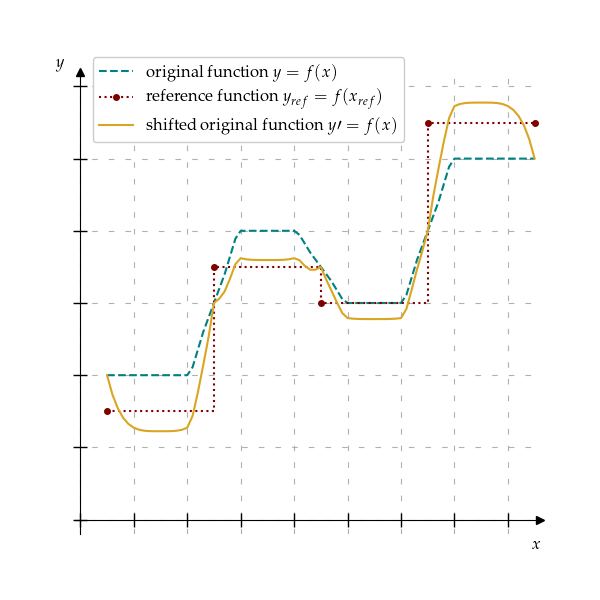
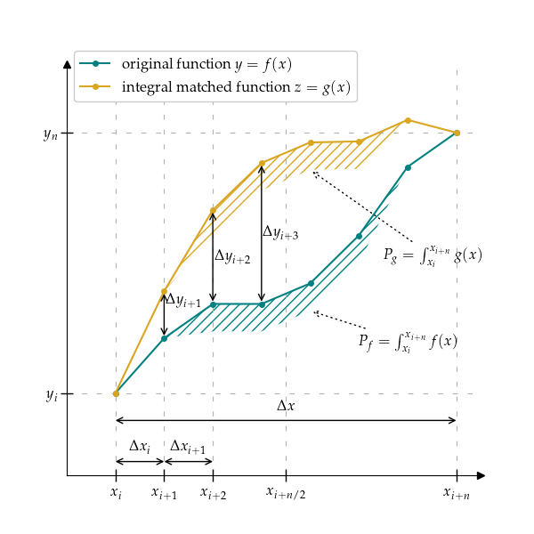

match module
- integral_matching_reference_stretch(x, y, x_ref, y_ref, fixed_points_in_x=None, fixed_points_indices_in_x=None, fixed_points_finding_strategy: str = 'closest', target_function_integral_method: str = 'trapezoid', reference_function_integral_method: str = 'rectangle', alpha=1.0, s=None)
Stretch function to match integrals in reference.
Stretch function evaluated in ‘(x, y)’ to match integral of reference function ‘(x_ref, y_ref)’ over the same range. Fixed points can specify points which should not be moved of the target function. By default, they match the points in ‘x’ that are closest to the points in the ‘x_ref’. The method may work not as expected when number of fixed points is higher than the half of the number of points in the target function ‘x’. If number of points in ‘x_ref’ is higher than the number of points in ‘x’, provide ‘fixed_points_in_x’ or ‘fixed_points_indices_in_x’ in order to allow the method to work correctly.
‘target_function_integral_method’ specifies the method to calculate integral of ‘(x, y)’ function. ‘reference_function_integral_method’ specifies the method to calculate integral of ‘(x_ref, y_ref)’ function.
Use ‘rectangle’ integral calculation if target/reference functions are representing averaged value over the interval. Use ‘trapezoidal’ integral calculation if target/reference functions are representing sampled values over time.
- Parameters:
n (1-D array-like of size) – Independent variable in strictly increasing order.
y (1-D array-like of size n) – Dependent variable.
x_ref (1-D array-like of size m) – Independent variable in strictly increasing order of the reference function. Its size should be lower than size of x, and it should contain only subset of points of x.
y_ref (1-D array-like of size m) – Dependent variable of reference function.
fixed_points_in_x (array-like, optional) – Points that should not be moved. By default, they are the closest points in x to the points in x_ref.
fixed_points_indices_in_x (array-like, optional) – Indices of points in x that should not be moved. If set, fixed_points_in_x is set according to that points.
fixed_points_finding_strategy (str, default: 'closest') – Strategy to find fixed points, if fixed points are not specified. Available options: ‘closest’: closest element (lower or higher) ‘lower’: closest lower or equal element ‘higher’: closest higher or equal element
target_function_integral_method (str, default: 'trapezoid') – Method to calculate integral of target function. Available options: ‘trapezoid’, ‘rectangle’
reference_function_integral_method (str, default: 'rectangle') – Method to calculate integral of reference function. Available options: ‘trapezoid’, ‘rectangle’
alpha (scalar, default: 1) – Stretching exponent factor. Scales how points are stretched if they are closer to the center point. If it is greater than 1, they are more stretched in the interval center, and less stretched in the boundaries. If it is lower than 1, they are more evenly stretched over whole function.
s (float, optional) – A smoothing condition for spine smoothing. If None, no smoothing is applied.
- Returns:
of shape (n, ). Stretched function matching integral value of reference function.
- Return type:
ndarray
Examples
>>> import numpy as np >>> from traffic_weaver.match import integral_matching_reference_stretch >>> y = np.array([1, 1.5, 2, 2.5, 3, 3.5, 4]) >>> x = np.array([0, 0.5, 1, 1.5, 2, 2.5, 3]) >>> y_ref = np.array([2.5, 2.5, 4, 3.5]) >>> x_ref = np.array([0, 1, 2, 3]) >>> integral_matching_reference_stretch(x, y, x_ref, y_ref, reference_function_integral_method='trapezoid', s=0.0) array([1. , 3.5, 2. , 4. , 3. , 4. , 4. ])
- _integral_matching_stretch(x, y, integral_value=0, integral_method='trapezoid', dx=1.0, alpha=1.0, s=None)
Stretches function y=f(x) to match integral value.
This method creates function \(z=g(x)\) from \(y=f(x)\) such that the integral of \(g(x)\) is equal to the provided integral value, and points are transformed inversely proportionally to the distance from the function domain center. Function integral is numerically approximated on provided points according to the ‘integral_method’.
- Parameters:
x (1-D array-like of size n, optional) – Independent variable in strictly increasing order. If passed None, it is evenly spaced dx apart.
y (1-D array-like of size n) – Dependent variable.
integral_value (float, default: 0) – Target integral value.
integral_method (str, default='trapezoid') – Method to calculate integral of target function. Available options: ‘trapezoid’, ‘rectangle’
dx (scalar, optional) – The spacing between sample points when x is None. By default, it is 1.
alpha (scalar, default: 1) – Stretching exponent factor. Scales how points are stretched if they are closer to the center point. If it is greater than 1, they are more stretched in the center, and less stretched in the boundaries. If it is lower than 1, they are more evenly stretched over whole function.
s (float, optional) – A smoothing condition for spine smoothing. If None, no smoothing is applied.
- Returns:
of shape (n, ). Stretched function matching integral value.
- Return type:
ndarray
Notes
Let assume that:
function contains n+1 values
\(\Delta x = x_n - x_0\)
\(\Delta x_{i} = x_i - x_{i-1}\)
\(x_{n/2}=(x_n + x_0) / 2\)
\(\Delta P\) - difference between target integral value and current function integral
\(\alpha\) - is stretching exponent factor
Beginning and end of function \(g(x)\) (i.e., \(z_0 = y_0\) and \(z_n = y_n\)) are fixed. All the remaining points are shifted inversely proportionally to the distance of \(x_{n/2}\).
The shifting factor \(w_i\) for each point \(x_i\) is calculated as:
\[w_i = 1 - (2 * abs(x_{n/2} - x_{i})) / \Delta x) ^ \alpha\]where \(\alpha\) is shifting exponent factor (by default equal to 1).
Each point is \(z_i\) is shifted by \(\hat{y} \cdot w_i\) where \(\hat{y}\) is a shift scaling factor to match desired integral value.
In trapezoid integral, difference in integral between target function and current function is calculated as:
\[\Delta P = \sum_{i=1}^N \left[\frac{w_{i-1} + w_i}{2} \hat{y} \cdot \Delta x_i \right]\]Shift scaling factor \(\hat{y}\) can be calculated as:
\[\hat{y} = 2 \Delta P / \sum_{i=1}^N \left[(w_{i-1} + w_i) \Delta x_i \right]\]In rectangle integral, difference in integral between target function and current function is calculated as:
\[\Delta P = \sum_{i=0}^{N-1} \left[w_i \hat{y} \cdot \Delta x_i\right]\]Shift scaling factor \(\hat{y}\) can be calculated as:
\[\hat{y} = \Delta P / \sum_{i=0}^{N-1} \left[w_i \Delta x_i\right]\]Next, if \(s\) is given, created function is estimated with spline function \(h(x)\) which satisfies:
\[\sum_{i} [h(x_i) - g(x)]^2 \le s\]
- _interval_integral_matching_stretch(x, y, dx=1.0, integral_values=None, fixed_points_indices_in_x=None, integral_method='trapezoid', alpha=1.0, s=None)
Stretches function y=f(x) to match integral value in given intervals.
This method creates function \(z=g(x)\) from \(y=f(x)\) such that the integral of \(g(x)\) is equal to the provided corresponding integral_values in intervals given by fixed_points_indices_in_x. In each interval, points are transformed inversely proportionally to the distance from the interval center. Function integral is numerically approximated on provided points according to the ‘integral_method’.
Each period stretch is delegated to integral_matching_stretch.
- Parameters:
x (1-D array-like of size n, optional) – Independent variable in strictly increasing order. If passed None, it is evenly spaced dx apart.
y (1-D array-like of size n) – Dependent variable.
dx (scalar, optional) – The spacing between sample points when x is None. By default, it is 1.
integral_values (list[float] | ndarray, optional) – Target integral values. By default, it is [0] * (len(interval_points_indices) - 1). If interval_point_indices are not specified, ValueError is raised.
fixed_points_indices_in_x (list[int] | ndarray, optional) – Indices in x array specifying intervals over which function is stretched to match corresponding integral_values. By default, it is evenly spaced, i.e., [0, len(y) / n, 2 len(y) / n, …, len(y)]. If integral_values are not specified` ValueError is raised.
integral_method (str, default='trapezoid') – Method to calculate integral of target function. Available options: ‘trapezoid’, ‘rectangle’
alpha (scalar, default: 1) – Stretching exponent factor. Scales how points are stretched if they are closer to the center point. If it is greater than 1, they are more stretched in the interval center, and less stretched in the boundaries. If it is lower than 1, they are more evenly stretched over whole function.
s (float, optional) – A smoothing condition for spine smoothing. If None, no smoothing is applied.
- Returns:
of shape (n, ). Stretched function matching integral value.
- Return type:
ndarray